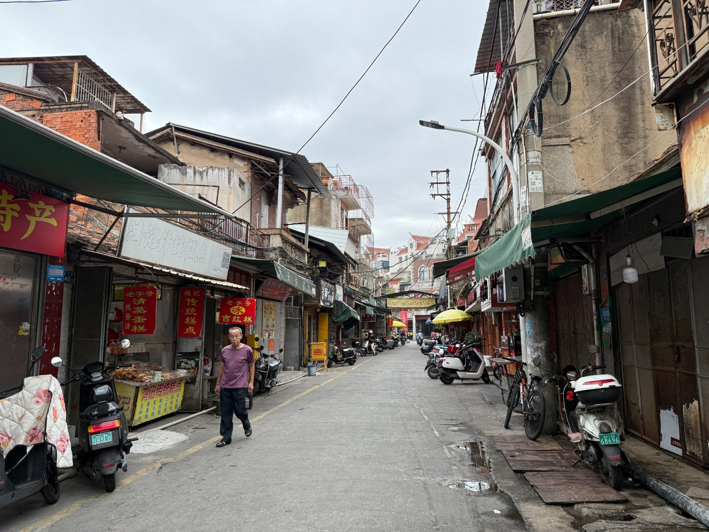
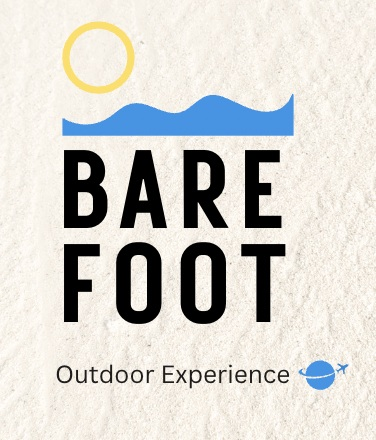
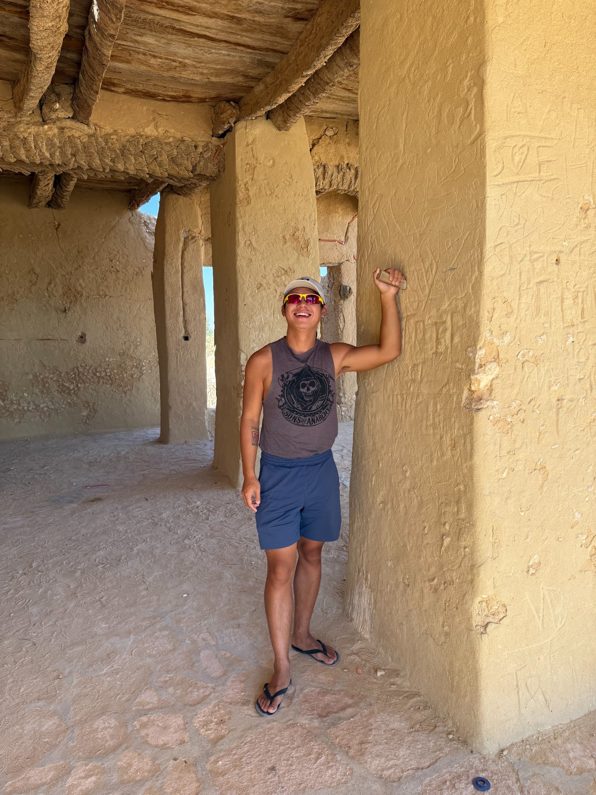
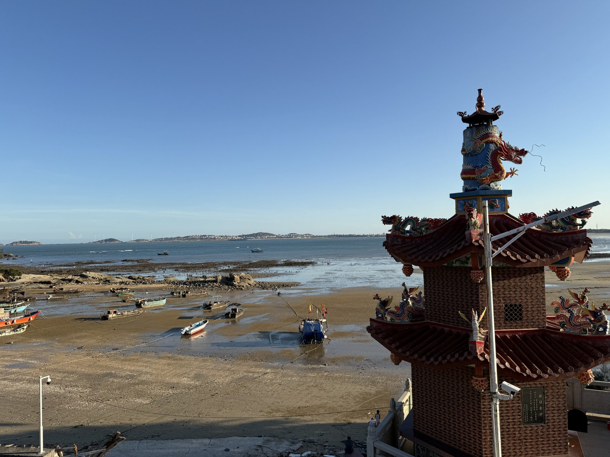
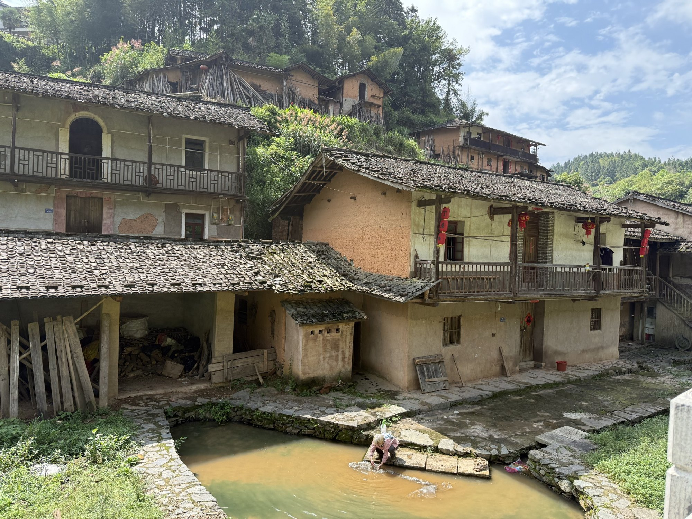
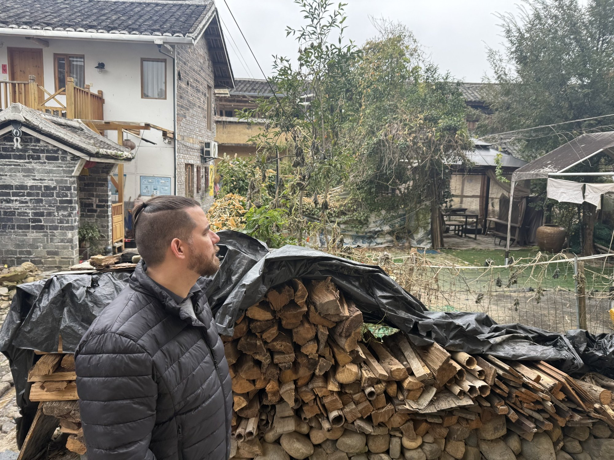

Quanzhou · Simple
Quanzhou Food
Riding Tour
Pedal through old lanes, heritage corners, and the everyday rhythm of a living historic city.
Culture · City ride↗

BAREFOOT Outdoor ExperienceI love traveling through first-hand experiences — getting a feel for a city by riding a motorbike, cycling through its streets, or hiking into the outdoors. Not just being carried from one stop to another on a tour bus, or staying inside air-conditioned museums.
If you also want to create deep and unforgettable travel memories in China, let's go on a little adventure together!

Many travelers visiting China might not think of Fujian — but this is my home, and the place I know best.
Fujian is my hometown and the region I know most intimately. Here, I can introduce you to authentic, distinctive landscapes and experiences — the little details, local corners, and memorable routes that make this place special.
Explore all four experiences, or choose a difficulty level that suits you.

Pedal through old lanes, heritage corners, and the everyday rhythm of a living historic city.

Challenge yourself on an uphill mountain ride from the foothills toward the summit.

Four days of mountain biking with Jeremy, village stays, local meals and tulou exploration.

Walk from Yunshuiyao toward Meilin, with tulou visits, lunch and transfers included.
A preview of the experience. The final route and stops will be confirmed before your trip.
Pay in full after your booking is confirmed · Alipay or WeChat Pay.
48+ hours before departure: full refund. Within 48 hours of departure: 50% refund.
Payment questions? Email Ros.
Share what you’re curious about. Let’s start a conversation.